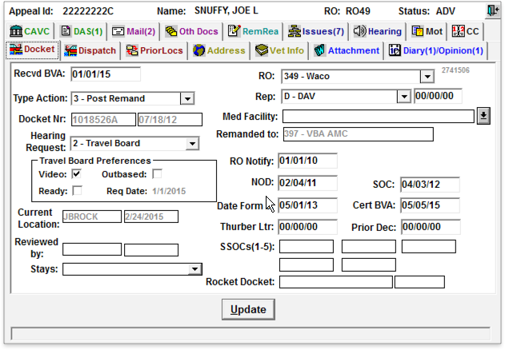

Between 2015 and 2017, I was a founding member of the Department of Veterans Affairs Digital Service team. I led a team modernizing the disability claims appeals process. We encountered many diverse and complex problems not typically seen in the tech industry. As the group lead, I identified solutions to these challenges and helped carve a path forward for our team. Our engagement in this project saved millions of dollars by moving our infrastructure to the cloud, reducing project management costs, and hiring capable contractors. Perhaps most of all, the project demonstrated effective modern development practices in the most bureaucratic institution across the federal government.
The Department of Veterans Affairs (VA) is one of the most bureaucratic and slow-moving agencies across the federal government. The agency contracted out most of its in-house technical expertise over many decades. It had spent more than $1 billion to build and support the system used to track and process disability claims, with most of that money going to a single entrenched software vendor. The result was a claims processing system called the Veterans Benefits Management System (VBMS). This system (like many others built for the federal government) was developed slowly, suffered from frequent system crashes, and failed to fulfill its core purpose – namely, processing disability claims on time. The usage of VBMS resulted in a backlog of hundreds of thousands of Veterans' claims and hundreds of thousands more appeals.
To address these challenges, the Executive Office of the President in the White House helped create the Digital Service at the Department of Veterans Affairs (DSVA) to bring the everyday expertise seen in the tech industry to the government. As the sponsor for this new effort, the White House directed us to increase the throughput of disability claims and appeals at the VA. This directive was no small feat and presented many challenges:
Starting with a team of just 3, we set out to meet our mandate while demonstrating the power and efficacy of a modern development approach to an agency stuck in the dark ages.
It took some time for us to find exactly how we could have the most impact on the existing process. We spent months meeting with various groups across the VA, learning about their challenges and wrapping our heads around the many steps of the claims and appeals process. We took on small projects, assisting these teams to build credibility and goodwill. Doing so, in turn, opened us up to new opportunities and potential partners. Eventually, we met a Presidential Innovation Fellow who had been working with the Board of Veteran Appeals (BVA) and developed a strong relationship with their administrators.
In discussion with the Board, we realized that the appeals process had a similar workflow to the claims process but was more centralized with a smaller group of stakeholders. The appeals process relied on a legacy system called the Veterans Appeals Control and Locator System (VACOLS), which the agency had built over 25 years prior on long-outdated infrastructure. The system, which a sole retirement-eligible employee maintained, relied on manual data entry and posed a significant risk to processing more than 450,000 appeals in BVA's backlog. This process, however, remained untouched by VBMS to date. We finally found an area where we could have a substantial impact.
A screenshot of the legacy system, VACOLS.
We met with the Board and offered to build a replacement for VACOLS iteratively, efficiently, and for less money than VBMS using modern development practices. We also proposed partnering with the Board to improve or replace outdated processes. The stakeholders at BVA were excited to try our approach, and we agreed to partner with one another.
Our first priority was allocating the funding to develop this new system. In a three-day "lockdown" meeting, all parties involved met and discussed the future project. We took pains to point out VBMS's track record in the claims process and that they were still at least a year away from having the resources available to work on the Appeals process. We also demonstrated our capabilities by presenting tech demos built across the three days and highlighting the work we had done for other partners in the agency to date. Ultimately, we were pleased to reach an agreement and got a sign-off to allocate $14 million in funding over two years to our project.
Brainstorming solutions with VA employees.
With official sign-off and funding allocated, we hit the ground running. Our first goal was to develop a deep understanding of the end-to-end appeals process to become familiar with existing constraints and challenges facing the Board. We met with many small teams handling processes such as appeal certification, mail management, intake, evidence gathering and review, hearings, adjudication, and decision dispatch. We examined how each team used the legacy appeals system, VACOLS, and other systems. We documented their feedback about their tools and the overall process, highlighting pain points. We also held a collaborative design session where employees discussed problems with their day-to-day workflows and sketched solutions to address those needs.
Using the information we gathered from our discussions and other forms of research, we mapped out a new and more efficient appeals process and created initial mockups for each workflow in that process. We even conducted a 60-day sprint to build a prototype using those ideas and actual data from the VACOLS database as a pilot to validate our approach.
Slide describing platform components as puzzle peices.
As a result of our research, we recommended developing the new system as a platform, another strategy often seen in the tech industry. I described the platform to our collaborators like a puzzle of different pieces. Each piece could connect with others to make up a whole. Some of these pieces were ones we could build ourselves, and others could be made by contractors or purchased. As we grew, we knew we could add more pieces or re-use the ones we'd already built to extend the puzzle (our system). This platform approach would enable us to be more responsive to BVA's needs and adapt to process and policy changes.
This approach required a high level of commitment and communication to ensure the project's success. We didn't know what the system would look like at the end because we knew circumstances would change incrementally. On the other hand, we knew that by scoping and delivering smaller pieces in smaller batches, we would feel a sense of progress throughout the development.
Timeline of work on Caseflow.
The 60-day sprint we conducted gave us insights into the standard components we would need to build for the platform, the challenges we would encounter when making the product, and how best to roll out our tools to VA employees.
The technical development of Caseflow was similar to what one would typically see in an early-stage startup. We used infrastructure and development tools that were commonplace in the tech industry. We set up a DevOps team, used a continuous development methodology, and took advantage of automated testing. These were new and different approaches than the VA was used to and presented unique challenges. We needed to spend lots of time educating security-minded employees about some of the tools we were using or explaining how these approaches were more efficient than what the VA was used to.
The VA hosted some 632 applications in production on-premise and almost none within the cloud. Our team worked closely with other DSVA team members to set up Caseflow as one of the agency's earliest adopters of Amazon Web Services. The team needed to work alongside diverse stakeholders (such as the Inspector General, Network Ops, Information Security Officers, and in-house acquisition staff) to receive an Authority to Operate the cloud infrastructure.
Another hurdle was connecting Caseflow to VBMS to get the latest information about a claim or appeal. To do this, we needed VBMS to write new APIs. VBMS only issued two software releases yearly. In contrast, our team launched updates every two weeks. Our development cycles' cadence was very different, making it hard for us to get the changes added quickly.
After a lot of consternation, we solved this problem with money. We paid VBMS to give us the time of some of their engineers outside their normal development process. Doing so allowed us to expedite the creation of the VBMS functionality we needed.
We designed Caseflow to replace VACOLS over time. Our first step was using a "lift and shift" strategy to move VACOLS into the cloud. Doing so eliminated the disaster scenario of VACOLS' single on-premises server getting corrupted and grinding the appeals process to a halt. It also allowed us to break off functionality from VACOLS once we replicated or replaced it in Caseflow.
Slide showing various stakeholders for the project.
We focused just as much on stakeholder communication as on development throughout the project. The content of these discussions ranged from pitching the idea of Caseflow, providing updates about the project's status, escalating challenges we were encountering, and giving insight into our development approach and planning.
We provided regular updates to our partners at the Board of Veterans Appeals, those working on VBMS, and the Deputy Secretary of the VA. We also presented to parties outside the agency. We met bi-weekly with the members of the Executive Office of the President. We met with Veteran Service Organizations that provide support and services to Veterans outside the VA. We also responded to numerous congressional and Government Accountability Office requests for information on our progress.
The most pervasive challenges we confronted were those relating to the VA's bureaucracy. We constantly struggled with the "check-box" culture that permeated the organization. We attended meetings with more than 240 people who all had to sign off on our next steps. We encountered opaque and long internal processes, such as producing Risk-Based Decision documents to use other VA systems. Other teams asked us to conduct security scans that would return false positives. When we tried to explain them back to the team, they lacked the technical expertise to understand them and failed us anyway. We often spent months negotiating with and trying to get support from other groups when we needed to integrate with their services. Employees acted out of fear and risk aversion. This environment made it especially hard for our team, who had come to the agency with relatively new and untested methods for the government.
Early on, we realized we would need to insulate our team from the agency's stifling and sometimes toxic culture. We came up with several strategies to provide this protection:
Slide describing how we protected the team.
Yet another area where we brought everyday tech industry practices to the government was how we launched Caseflow. Typically, government agencies roll out new systems to all relevant employees simultaneously. When they do so, employees often encounter overlooked bugs and edge cases that result in work stoppage and negative feelings toward the new software.
To ensure a smooth rollout, we focused on three areas:
For help content, we created a brief video walkthrough using Caseflow and provided an online manual accessible directly from within the Caseflow app. For support and feedback, we set up a dedicated phone line, email address, and an in-app feedback form. To roll out Caseflow gradually:
We knew we needed to bring on more team members. Instead of working on a single pilot project, we needed to work on multiple components addressing different Appeals workflows simultaneously. We designed and used a novel software development contract. Doing so allowed us to hire additional high-quality engineers, designers, product managers, and support staff, giving the project more than thirty team members. We divided these contractors into smaller sub-teams.
When we identified a new potential Caseflow workflow, we sent out an Advance Team to conduct research, learn about the existing processes, and identify opportunities for improvement. The Advance Team handed these findings off to the development team once they were ready to begin working on that workflow in earnest, kickstarting a typical research, design, and build cycle for the project until its completion. This approach ensured we kept momentum as we continued building Caseflow's various components and gained ground in modernizing the appeals process.
Statistics for Caseflow Certification.
In 2017, at the beginning of Caseflow's development, roughly 475,000 appeals were pending. Through our work, that number has more than halved to 200,000. We helped reduce legacy appeals (the oldest and used VACOLS) from 472,066 in 2017 to 66,000. The specific impacts from the Caseflow components we designed include:
We saved millions of dollars by moving our infrastructure to the cloud, reducing project management costs, and hiring capable contractors. We proved that the everyday modern development practices from industry could be just as effective in the most bureaucratic institutions across the government. Doing so opened the door for Digital Service teams across different federal agencies to adapt and grow these approaches, who, in turn, delivered even more benefits to their constituents.